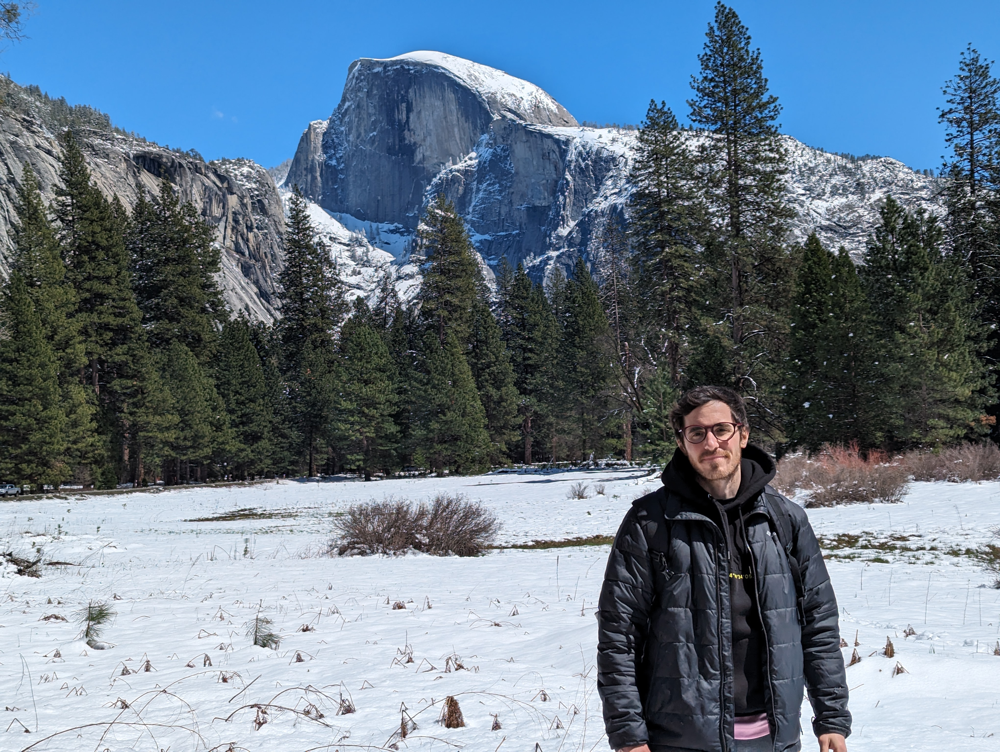
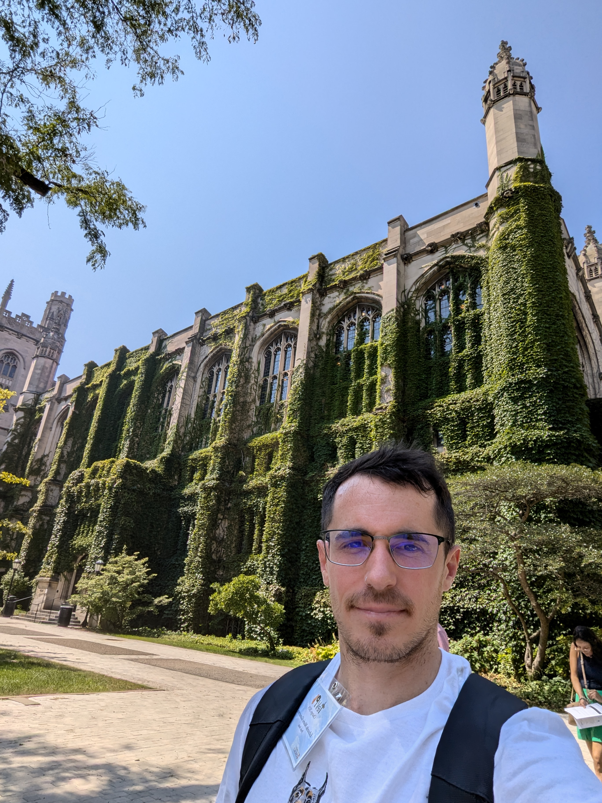

Eduardo M. Gutiérrez
Postdoctoral Fellow
Institute for Gravitation and the Cosmos, Penn State University
I investigate the most energetic phenomena in the Universe, particularly those occurring in the vicinity of black holes and neutron stars.
Postdoctoral Fellow
Institute for Gravitation and the Cosmos, Penn State University
I investigate the most energetic phenomena in the Universe, particularly those occurring in the vicinity of black holes and neutron stars.


I am a theoretical astrophysicist from Argentina fascinated by the most energetic phenomena in the Universe, especially those that occur in the extreme environments surrounding compact objects. My passion for astronomy began in childhood, when I would spend countless nights with my father, looking at the stars through our binoculars.
I was fortunate to live very close to the Universidad Nacional de La Plata, one of only three institutions that teach Astronomy in Argentina. I started my undergraduate studies in 2011 and graduated in 2017 with a Master's thesis about the potential effects of primordial black holes in early cosmic evolution.
In 2022, I earned my PhD working at the Instituto Argentino de Radioastronomía under the supervision of Prof. Gustavo E. Romero, focusing on radiation from accreting black holes. My research explored scenarios in which nonthermal particles generate high-energy emission in these extreme environments. During my doctoral studies, I spent six months at the Rochester Institute of Technology, where I worked with Prof. Manuela Campanelli on simulating the electromagnetic radiation produced by accreting supermassive black hole binaries. I am currently a Postdoctoral Scholar at the Institute for Gravitation and the Cosmos at The Pennsylvania State University. In collaboration with Prof. David Radice and his group, I simulate neutron star mergers and study the multimessenger signals arising from these explosive events.
My research combines analytical theory with large-scale numerical simulations, in particular, general-relativistic Magnetohydrodynamic (GRMHD) simulations, to study some of the extreme phenomena that take place in the vicinity of compact objects. These include accretion flows onto single and binary black holes, relativistic jets, and binary neutron star mergers. I aim to understand how these systems produce high-energy multimessenger radiation, including electromagnetic waves across the spectrum, gravitational waves, and neutrinos.

How can we identify the presence of two supermassive black holes orbiting each other through electromagnetic emission? What are the specific electromagnetic signatures one could expect to observe from these systems?

What happens when two neutron stars merge? How do magnetic fields evolve? What are the main multimessenger signals from these events?

What role do nonthermal particles play in hot accretion flows? How do they influence the immediate vicinity of accreting black holes?

Which properties of relativistic jets can we infer via detailed broadband SED modelling?
Institute for Gravitation and the Cosmos, Penn State University
University Park, PA 16802-6300